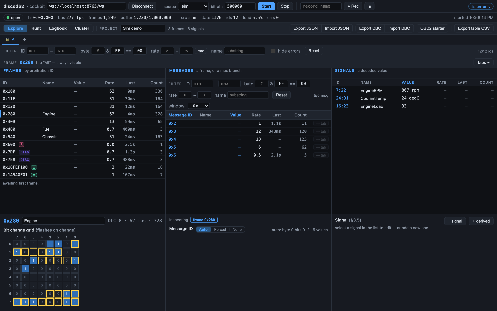
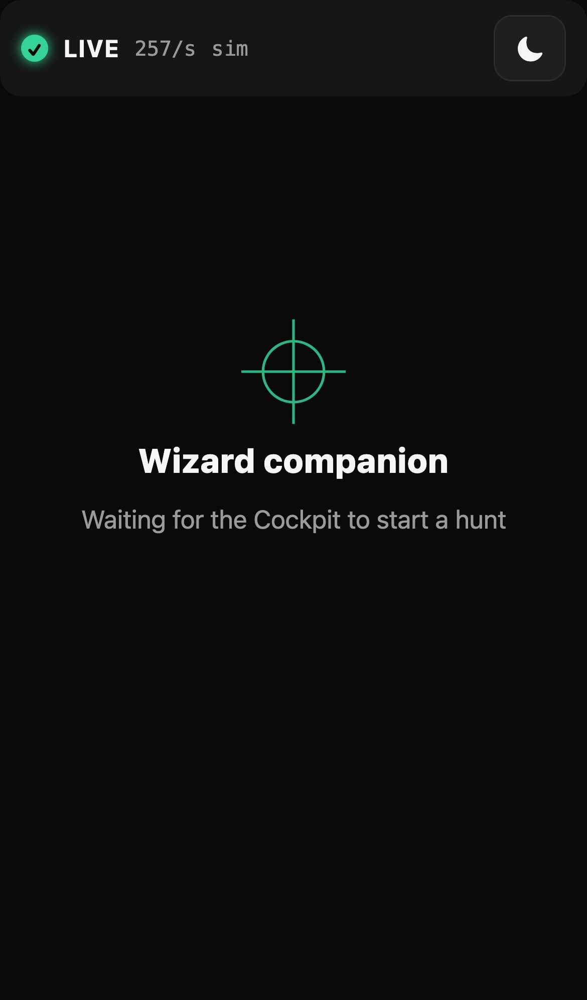
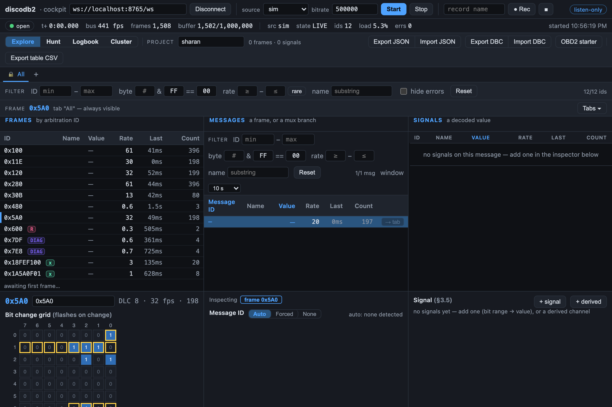
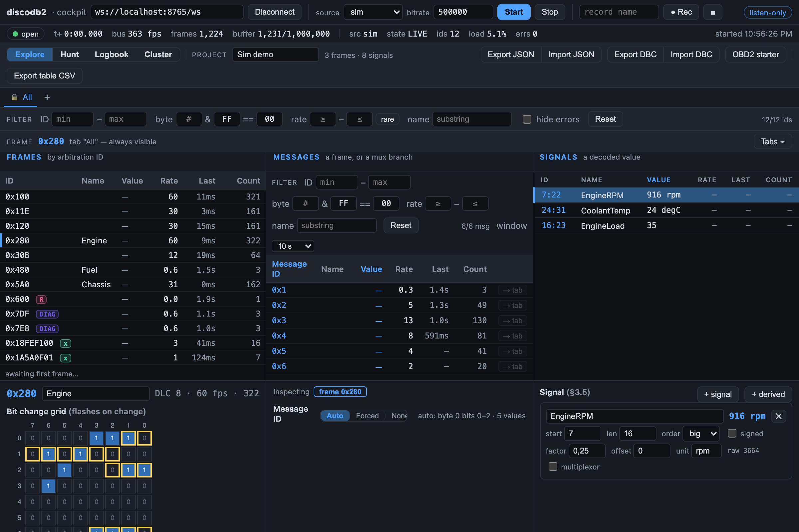
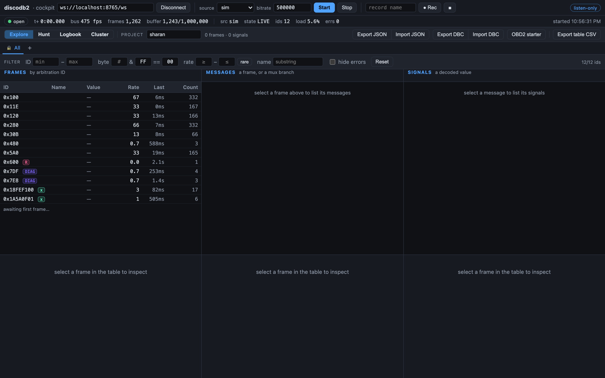

Read your car's CAN bus. Make sense of it. Never talk back to it.
Plug a USB CAN adapter into the OBD-II port and turn the raw torrent of
frames into something you can actually read — which IDs are alive, which
bytes move when you pull the handbrake, what the rev counter looks like as
a number.
The cockpit on a simulated bus — real frames, no mock-ups.
What it is
A workshop tool for understanding a bus — not modifying it
discodb² listens to the CAN traffic on your vehicle and helps you discover,
decode and name the signals hiding in it. It is built for people who enjoy
taking apart how their car works, on their own time, on a car they care about.
Safe by design
Read-only, enforced
The bus is opened in listen-only/silent mode — enforced in the backend,
independent of your network or UI. You can't accidentally transmit onto
a live car.
Two views
Laptop and phone
A heavy cockpit client does the buffering and analysis on a
laptop; a light copilot runs on a phone for a glance while the
car moves. Same stream, two views.
Runs anywhere
A Pi or your PC
Leave a Raspberry Pi in the car as a self-contained WiFi access point,
or just run everything natively on your Mac, Linux box or Windows PC.
No car needed
Zero-hardware simulator
A built-in simulator emits a realistic VAG-style bus — revving RPM,
ramping speed, draining fuel, plus counters and checksums to trip up
naive analysis. Learn the tools before you touch a car.

Cockpit — the laptop does the buffering and analysis.

Copilot — the same stream, at a glance.
How it works
A thin backend owns the bus; the clients do the thinking
The backend is a fast pass-through: it owns the adapter (listen-only),
streams binary frames over a WebSocket, and records or replays them. The
web clients use your machine's resources for buffering, decoding and
analysis. The wire format is pinned in a written contract every component
is built against.
Listen-only is the one invariant. A request to disable it
on a live source is refused — the safety doesn't live in the UI or the
network, it lives in the backend.
See how it's enforced →

See which bytes move when you pull the handbrake.

Then read the rev counter as an actual number.
Try it — no car, no adapter
Run the whole thing against a simulated bus
Three commands bring up the backend on a realistic simulated bus and open
the full cockpit in your browser. Swap one flag later for a real adapter.
# 1. Backend — stream a realistic simulated buscd backend && pip install -r requirements.txt
python -m discodb2_backend --source sim # ws://localhost:8765/ws# 2. Cockpit — the full client, in another terminalcd frontend/cockpit && npm install && npm run dev # http://localhost:5173# 3. (optional) Copilot — the phone viewcd frontend/copilot && npm install && npm run dev
With a real adapter, swap --source sim for
--source gs_usb (candleLight/UCAN over libusb) or
--source socketcan (Linux/Pi).

What those three commands get you: the cockpit live on the simulated bus.
A car is an expensive thing you look after. discodb² is built for the
curiosity that comes with that — reading a bus to understand it, confirming
a hypothesis against your own vehicle, decoding a signal nobody published.
No telemetry, no accounts, no cloud. It runs on your hardware and listens.
That's the whole pitch.